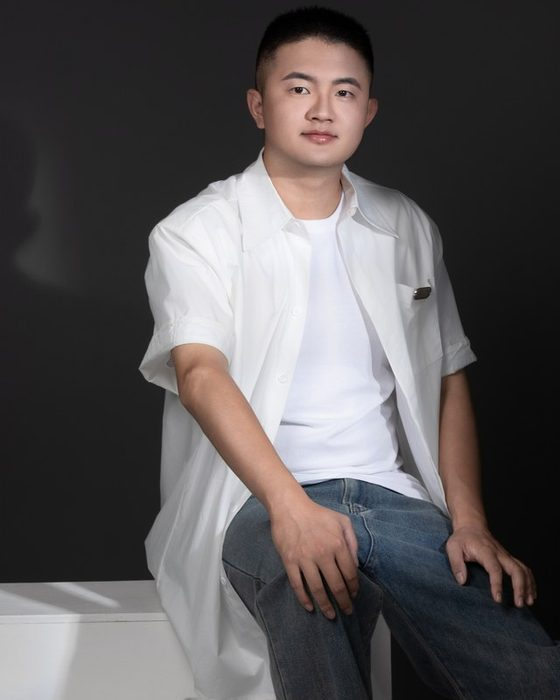

01 · CONTENT PLANNING
内容策划
以内容策划人的身份参与创作，负责内容方向与整体构思。
内容方向
AIGC 视频编导 · 编剧 · 内容策划人
五年影视剧集与网络短剧创作积淀 · 专注 生成式技术 × 影视叙事

在内容策划、叙事建构与影像表达之间，形成贯通能力。
李自长，AIGC 视频编导、编剧、内容策划人。五年影视剧集及网络短剧创作积淀，使其在内容策划、叙事建构与影像表达之间形成贯通能力。
其创作兼具奇幻题材的想象张力与轻喜剧类型的松弛质感，善于以鲜明角色塑造承载情感内核，以敏锐镜头意识构建视觉节奏，在类型表达、叙事效率与观众共鸣之间寻求精准平衡。
作为 AIGC 视频创作领域的实践者，持续探索生成式技术与影视叙事的融合边界，致力于打造兼具创意质感、审美格调与传播势能的优质内容。
以内容策划人的身份参与创作，负责内容方向与整体构思。
以编剧身份完成叙事建构，善于以鲜明的角色塑造承载情感内核。
以编导身份把控影像表达，以敏锐的镜头意识构建视觉节奏。
作为 AIGC 视频创作领域的实践者，探索生成式技术与影视叙事的融合边界。
创作兼具奇幻题材的想象张力。
创作兼具轻喜剧类型的松弛质感，在类型气质之间自如切换。
善于以鲜明的角色塑造承载情感内核，让角色成为叙事推进的支点。
以敏锐的镜头意识构建视觉节奏，在影像层面把控观感与叙事速度。
在类型表达、叙事效率与观众共鸣之间寻求精准平衡。
致力于打造兼具创意质感、审美格调与传播势能的优质内容。
在内容策划、叙事建构与影像表达之间形成贯通能力，是其创作方法的核心。
作为 AIGC 视频创作领域的实践者，持续探索生成式技术与影视叙事的融合边界。
追求兼具创意质感、审美格调与传播势能的优质内容。